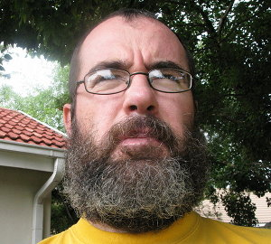

(Or is it Who I am!?) (Last updated 2009-01-05)

My name is William Bell I live in South Africa in the town of Vanderbijlpark. I am 39 years old. I studied at the Vaal Triangle Technikon and have a Higher National Diploma in electrical engineering.
I currently work as a Specialist (IT) at Mittal Steel in Vanderbijlpark.
My current interests are Christianity, Cycling and computers mainly in the Linux area.
My other interests include Hobie cat sailing, Computer games, Fauna & Flora, spicy food, relaxing music (mainly gospel) and of course doing nothing! Doing nothing of course is very important!
Interests in the back door at the moment are: Psychology, Low-Tech Natural Aquariums, Assembler programming, Paragliding, Mountain Biking, Kayaking, Science, Astronomy, Quantum Physics, Technology, Electronics, Computers, Chess, Math, Ballroom/Latin dancing.
I can be contacted at William.Bell@frog.za.net